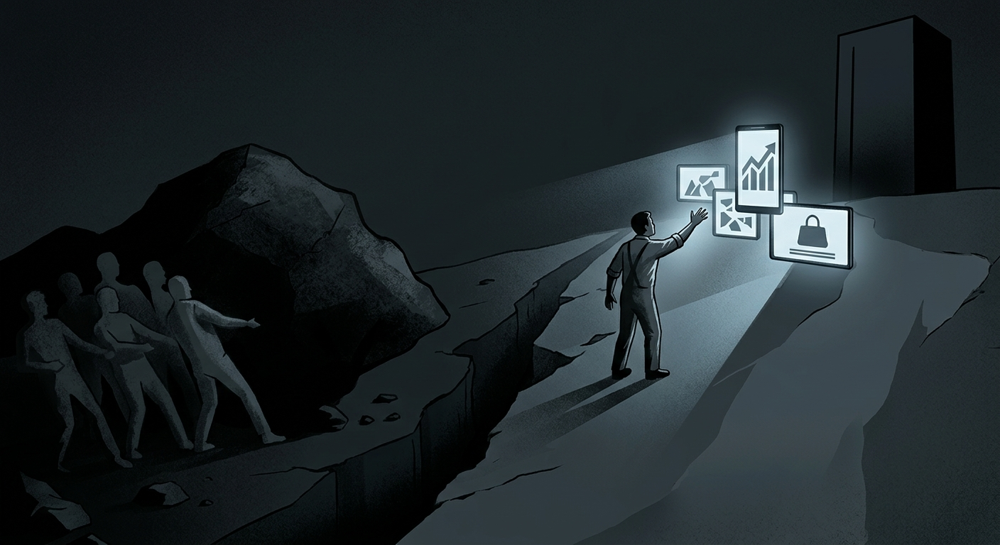

La fragmentación de la sociedad: cuando dejamos de reconocernos como clase
Consumo, redes sociales y disputas políticas en una sociedad fragmentada
Resumen
Este ensayo reflexiona sobre cómo las aspiraciones de consumo, la pérdida de identificación con la clase trabajadora y la fragmentación social condicionan las disputas políticas contemporáneas. Examina el papel de las redes sociales en la movilización y la circulación de narrativas, sin reducir movimientos distintos a una misma estrategia. También cuestiona las limitaciones de algunos proyectos progresistas y plantea que una transformación duradera requiere atender las condiciones materiales, fortalecer la organización colectiva y permitir una participación ciudadana consciente.
Palabras clave: fragmentación social, clase trabajadora, consumo, redes sociales, América Latina, progresismo.
El mundo no está dividido únicamente entre derecha e izquierda. Tampoco podemos comprenderlo exclusivamente a partir de la oposición entre ricos y pobres. Existen personas con grandes cantidades de recursos económicos que pueden tener una mayor conciencia de clase que quien conduce un autobús todos los días. Esto nos lleva a una pregunta: si las divisiones tradicionales no son suficientes para explicar lo que ocurre en nuestras sociedades, ¿qué es lo que realmente nos está separando?
Quizás la respuesta esté en que vivimos en sociedades mucho más fragmentadas de lo que queremos reconocer. Mientras las diferencias culturales, ideológicas y sociales nos enfrentan, existe una burguesía que concentra buena parte del poder económico y conserva una importante capacidad de influencia sobre las decisiones que determinan el rumbo de nuestras sociedades. Una élite que no solamente acumula capital, sino que también invierte enormes cantidades de recursos en medios de comunicación y otros mecanismos de influencia para construir una determinada percepción de la realidad y promover un modelo de consumo que termina colocando el capital por encima del bienestar humano.
Y cuando hablamos de consumo no nos referimos exclusivamente a los productos que compramos. Hablamos de un sistema que convierte a las personas en consumidores antes que en ciudadanos, y que contribuye a que una parte de la clase trabajadora pierda la identificación con sus propios orígenes sociales. Es precisamente en ese proceso donde encontramos una de las contradicciones de nuestro tiempo: personas cuya posición económica y relación con el trabajo siguen estando vinculadas a la clase trabajadora, pero que dejan de reconocerse como parte de ella y comienzan a identificarse con una supuesta clase media, muchas veces construida más sobre aspiraciones de consumo que sobre una transformación real de sus condiciones materiales.
Vivimos en una época en la que las tendencias parecen marcar el ritmo de las sociedades y, especialmente, el comportamiento de determinados grupos. Estos fenómenos no se manifiestan de la misma manera en todos los países, pero nunca habíamos estado tan cerca de universalizar ciertos patrones de comportamiento, formas de protesta y mecanismos de movilización. Las redes sociales han contribuido a acelerar este proceso, aunque no debemos confundir su capacidad de amplificación con la existencia de una dirección centralizada detrás de cada movimiento. Algunos procesos responden a inconformidades sociales genuinas; otros pueden ser aprovechados, amplificados o instrumentalizados por determinados intereses políticos y económicos.
Basta observar algunos acontecimientos de las últimas décadas: la Primavera Árabe, las movilizaciones juveniles en distintos países y el crecimiento de movimientos conservadores que han recuperado espacios políticos que muchos consideraban en retroceso. Son fenómenos diferentes, con causas y consecuencias particulares, pero todos permiten examinar el papel que han adquirido las nuevas tecnologías en la organización, difusión y transformación de la acción política.
Las redes sociales han cambiado la manera en que se convoca a las personas, se distribuye la información y se construyen las narrativas políticas. También han facilitado la circulación de noticias falsas, la manipulación emocional y la amplificación artificial de determinadas tendencias. En un entorno donde la velocidad de difusión suele imponerse sobre la comprobación de la información, los discursos más simples, contundentes y emocionales pueden encontrar condiciones favorables para expandirse.
Esto ayuda a comprender, al menos en parte, por qué determinados movimientos conservadores han logrado conectar con sectores importantes de la población. No necesariamente porque sus propuestas respondan mejor a los problemas estructurales de esas sociedades, sino porque algunos de sus representantes han sabido construir mensajes sencillos, identificar enemigos reconocibles y utilizar eficazmente los nuevos medios de comunicación. La complejidad de los problemas sociales termina reducida a consignas que ofrecen explicaciones fáciles y soluciones aparentemente inmediatas.
Pero ¿qué tienen que ver las movilizaciones de la generación Z que contribuyeron a la caída del gobierno de Nepal, la Primavera Árabe, que provocó la caída de gobiernos que llevaban décadas en el poder, y el ascenso de figuras políticas que se presentan como conservadoras, antisistema o ultraliberales?
A primera vista, poco. Sin embargo, todos estos acontecimientos permiten plantear una discusión sobre el papel de las redes sociales en la transformación de la política contemporánea. No debemos asumir que todos responden a una misma estrategia ni que persiguen los mismos objetivos. Lo que sí podemos observar es que las plataformas digitales se han convertido en espacios fundamentales para movilizar el descontento, disputar la opinión pública y construir nuevas identidades políticas.
También debemos detenernos en el significado de ciertas etiquetas políticas. No se puede hablar de libertad como un principio absoluto mientras se pretende restringir los derechos y las libertades de determinadas minorías o de los sectores más desfavorecidos. La libertad económica, por sí sola, tampoco garantiza la libertad material de quienes carecen de las condiciones necesarias para ejercerla. Por eso conviene examinar las propuestas políticas más allá de los nombres que sus representantes deciden atribuirse.
En América Latina, estas transformaciones tienen una dimensión particular. El crecimiento de determinadas opciones conservadoras y la pérdida de apoyo de algunos proyectos progresistas no pueden explicarse exclusivamente por la influencia de las redes sociales ni por una supuesta falta de conciencia política de los votantes. Sería demasiado sencillo responsabilizar a la población por elegir gobiernos que después no cumplen sus expectativas. También debemos examinar los errores de quienes llegaron al poder con el respaldo de esos mismos sectores populares.
Aquí aparece una de las principales contradicciones del progresismo latinoamericano: en diferentes experiencias de gobierno, la voluntad de alcanzar acuerdos con sectores tradicionales de poder ha terminado limitando la profundidad de las transformaciones prometidas. En lugar de aprovechar el respaldo popular para construir bases institucionales y sociales capaces de reducir las desigualdades, algunos proyectos han terminado atrapados entre sus propias contradicciones, las presiones de las élites económicas y sus dificultades para consolidar una agenda transformadora.
El caso de Pedro Castillo en Perú permite abrir esta discusión. Su gobierno estuvo marcado por conflictos políticos, debilidad institucional, disputas con el Congreso y contradicciones propias. Su desenlace no puede reducirse a una sola causa ni interpretarse únicamente como el resultado de una conciliación con las élites. Sin embargo, su experiencia plantea una pregunta importante: ¿qué ocurre cuando un proyecto político llega al poder con el respaldo de sectores populares que esperan transformaciones profundas, pero no consigue construir las condiciones necesarias para materializarlas?
El problema no es que los gobiernos progresistas no puedan transformar una sociedad de un día para otro. Ningún gobierno puede hacerlo. Las estructuras económicas, las instituciones y las relaciones de poder no desaparecen con un cambio de administración. El problema aparece cuando, además de enfrentar esas limitaciones, no se construyen los mecanismos necesarios para organizar, comunicar y defender las transformaciones que se pretenden impulsar.
En buena parte de América Latina, los proyectos progresistas han tenido dificultades para convertir el respaldo electoral en una relación política y social duradera. No basta con ganar elecciones, aprobar determinadas políticas públicas o mejorar algunos indicadores económicos. También es necesario explicar esas transformaciones, acercarlas a la vida cotidiana de la población y construir una ciudadanía capaz de comprender qué derechos ha conquistado, cuáles siguen pendientes y qué intereses pueden verse afectados cuando cambia la orientación de un gobierno.
Porque la mayoría de las personas no vive pensando permanentemente en categorías ideológicas. La gente quiere salir a trabajar, tener comida en la mesa, acceder a una vivienda, educar a sus hijos y construir una vida con cierta estabilidad. Esas necesidades no son incompatibles con la conciencia política; son precisamente una de las razones por las que la política debería importar.
Sin embargo, cuando las desigualdades se profundizan y una proporción desmedida de la riqueza se concentra en grupos reducidos, las expectativas de progreso comienzan a chocar con las condiciones materiales de la mayoría. En ese escenario, los discursos que prometen soluciones inmediatas pueden encontrar terreno fértil, especialmente cuando quienes deberían ofrecer alternativas no consiguen explicar sus propuestas ni demostrar que son capaces de cumplirlas.
Por eso, la respuesta a la crisis de los proyectos progresistas no puede consistir simplemente en esperar que la población comprenda sus planteamientos o en responsabilizarla cuando cambia sus preferencias políticas. También deben revisar sus propias prácticas, reconocer sus errores y preguntarse por qué una parte de quienes les brindaron su apoyo ha dejado de identificarse con sus proyectos.
La cuestión de fondo es que no se puede construir una transformación social duradera sin una relación sólida con la clase trabajadora. Y esa relación no se construye únicamente durante las campañas electorales. Se construye mediante políticas públicas, organización social, educación, comunicación y resultados concretos que permitan a las personas reconocer que sus condiciones de vida pueden mejorar a través de la acción colectiva.
Las nuevas generaciones latinoamericanas están desarrollando otras formas de interpretar la política, el trabajo, el consumo y sus expectativas de futuro. Algunas de esas transformaciones pueden representar avances en materia de derechos y participación; otras pueden expresar frustraciones, desconfianza o retrocesos en determinadas conquistas sociales. No debemos asumir que toda movilización juvenil responde a una misma orientación ideológica ni que una generación completa comparte una única visión del mundo.
Lo que sí debería preocuparnos es la posibilidad de que la fragmentación social termine convirtiéndose en una condición permanente de nuestras democracias. Mientras los sectores populares se enfrentan entre sí por diferencias que muchas veces no modifican sus condiciones materiales, los grupos que concentran el capital mantienen una capacidad de influencia que les permite participar activamente en la definición de las reglas del juego.
Y aquí volvemos a la pregunta inicial: ¿qué nos divide?
Quizás no sea solamente la ideología, la cultura o el nivel de ingresos. También nos divide la incapacidad de reconocer los intereses que compartimos, la dificultad para distinguir entre nuestras aspiraciones individuales y las condiciones colectivas que hacen posible alcanzarlas, y la facilidad con la que determinados discursos convierten nuestras frustraciones en enfrentamientos entre personas que, en muchos casos, comparten problemas similares.
El camino no consiste en regresar a modelos políticos del pasado ni en idealizar las experiencias progresistas que han gobernado la región. Tampoco se trata de asumir que toda oposición al progresismo responde a los intereses de las élites económicas. Se trata de comprender que ningún proyecto político puede sostenerse indefinidamente sobre promesas, símbolos o identidades ideológicas si no consigue transformar las condiciones materiales de quienes dice representar.
Si los gobiernos progresistas quieren construir proyectos estables, tendrán que comprender que no basta con administrar las estructuras existentes: también necesitan construir capacidades sociales para transformarlas. Eso implica enfrentar las desigualdades, discutir la concentración del poder económico, fortalecer las instituciones y desarrollar mecanismos de comunicación y educación política que permitan a la ciudadanía participar conscientemente en las decisiones que afectan su futuro.
En tiempos de radicalización y de profundas disputas por el poder, quizás sea necesario recuperar la capacidad de plantear transformaciones estructurales con mayor determinación. No se trata de radicalizar el discurso por el simple hecho de hacerlo, sino de entender que determinados problemas no pueden resolverse sin cuestionar las estructuras que los producen.
Porque mientras el capital continúe ocupando un lugar superior al bienestar humano en la organización de nuestras sociedades, y mientras quienes trabajan tengan cada vez menos tiempo y oportunidades para participar en las decisiones que afectan sus vidas, seguiremos reproduciendo una contradicción que atraviesa buena parte de nuestro tiempo: una sociedad en la que muchos luchan diariamente por sobrevivir, otros concentran una capacidad extraordinaria para decidir y una parte de quienes deberían construir alternativas termina sintiéndose traicionada por los mismos proyectos en los que depositó sus esperanzas.
Ensayo original en PDF (5 páginas).
Descargar PDF